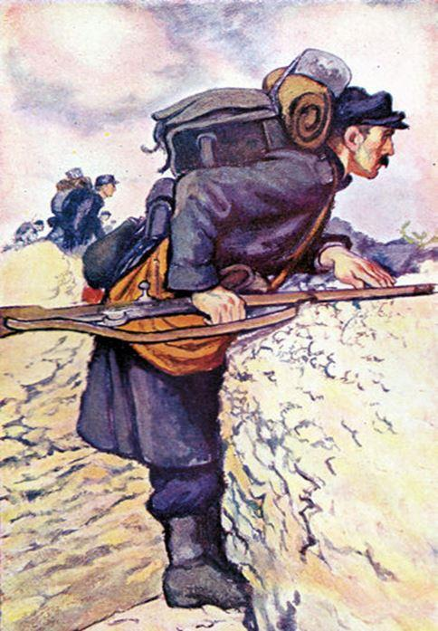

Les bois bruissaient sous une brise irrégulière qui parfois s’endormait et parfois s’emportait, battant fort à déformer les âmes qui rôdaient par là en pagaïe. Lui, marchait, ses godillots plantés dans la boue bleue qui cachait mal ses décompositions sous l’édredon doré des feuilles sèches, frémissantes sous les courants d’airs malicieux. Ils se poursuivaient les courants d’air comme des bêtes légères et rapides entre les troncs noirs et les branches tordues qu’un élan tragique éparpillait sur la grisaille des nuages migrant en troupeaux laineux et crépus, paissant, sans s’arrêter, les cimes nues des arbres.
Lui avançait péniblement car elle collait la boue, cette boue bleue comme son uniforme, elle le retenait, suçait ses godillots, ralentissant sa fuite. Il forçait, geignait, essoufflé et se retournait souvent, inquiet, ne distinguant rien dans la perspective démultipliée par les troncs noirs, éclatée en un millier de points de fuite qui épuisaient le regard. Il aurait voulu tomber à la renverse et se laisser aller à la réparation d’un long sommeil de pierre tombale. Dormir, ça faisait trois jours qu’il n’avait pas dormi et qu’il marchait ainsi, avec, dans les cuisses, le harpon des crampes et, dans les mollets, le plomb des lieues parcourues. À chaque pas, un arrachement !
Cette terre le voulait, elle s’accrochait à lui avec l’entêtement primaire d’une maîtresse fangeuse et fidèle à ses vices. Mais lui résistait et continuait d’avancer suivant maintenant le dénivelé qui rejoignait un creux où le lit de feuilles était imprégné d’eau. Il s’arrêta pour se reprendre, il ne sentait plus son cœur, comme s’il l’avait perdu sur le chemin. Il s’appuya contre un arbre, courbé, bouche ouverte. La salive lui coula des lèvres en longs filets gluants qui brillèrent dans le faux jour. Il haletait et ses yeux s’ouvraient sur un kaléidoscope de moucherons lumineux qui tournaient devant lui et finirent par se dissoudre dans une clarté aveuglante. Les nuages tout près, curieux, s’étaient penchés, et couvraient son échine de leur souffle froid. Il releva la tête, retint sa respiration : aucun bruit, personne ne venait ; seul le vent secouait les branches qui craquaient comme ces carrioles boueuses qu’ont charge de cadavres et qui grincent aux ornières. Ses pieds étaient blessés par la marche, maltraités dans leurs chaussettes rugueuses et trouées, collantes de sueur ; la laine trop épaisse de son uniforme était dure comme le bois d’un cercueil ; son front perlant de sueur; il l’essuie d’un revers sa manche estampillée, P. B., les initiales de Pierre Boursac, le fabricant, l’industriel des revues illustrées, l’honorable homme d’affaires, l’ami des ministres, le confident des rois, l’héritier de trois générations de bénéfices industriels et spéculatifs. Pierre Boursac habille le soldat, Pierre Boursac habille la France, pour qu’elle tue et se fasse tuer ! Sans lui, nos soldats iraient nus ! Il sourit, le fuyard, au milieu de ses tourments. Imaginer des soldats nus.
Six mois auparavant, dans la caserne de Cochons sur Dupry, on les avait tassés dans des baraquements de fortune. Ils venaient des départements voisins, des campagnes surtout, illettrés, tannés par les soleils et ébouriffés par les vents. Au signal, ils s’étaient déshabillés, suants et tremblants devant des lieutenants aux joues roses, manucurés et gantés, inaccessibles et patriotes, prêts à mourir et faire mourir, à peine sortis qu’ils étaient d’écoles lointaines et prestigieuses dont les frontons creusés de lettres d’or brillaient sous la trompette des victoires à venir.
La veille on les avait jetés sur des sommiers grinçants, où lui ne dormit pas, pris entre les ronflements de ceux que rien ne trouble, pas même la guerre, et les sanglots étouffés de ceux qui étaient restés peureux et enfants. Et le matin, avec des yeux gonflés de sommeil ou creusés par l’insomnie, ils avaient obéi, dociles, ôté leurs vêtements et reçu l’uniforme, plié, ficelé, impeccable, pesant lourd sur leurs bras nus à chair de poule, avec, posés dessus, les godillots brillants, flambant neufs sentant le cuir frais qui finiraient en viandes mortes.
Les officiers ne les voyaient pas : roses, bien peignés, raies martiales, pointues comme des baïonnettes, leurs regards perdus dans le lointain, rêveurs ou défiant l’horizon, ils caressaient leurs petites moustaches blondes, relevaient leurs petits mentons gracieux et barbichus – leurs fiancées les aimaient comme ça –, et simulaient déjà la grandeur des statues qui célébreraient un jour leurs défaites en remerciant les morts au prix du ciment. Plantés droits dans leurs bottes, soudés au plancher, ils proféraient des ordres brefs, imprononcés, des hoquets pour tout dire, des couacs – avaient-ils mués ? – imitant le canon, le fusil, la mitraille, le tonnerre des victoires qui couvrirait leurs bustes de médailles dorées.
En regardant les poutres sales qui tenaient la charpente, ils pensaient à leurs familles, à leur mariage prévu pour la prochaine permission – dans un mois, n’est-ce pas ? Ils se voyaient héros, admirés, futurs gendres célébrés au champagne et se grisaient un peu, beaucoup, passionnément, sous les fenêtres des châteaux, dans des parcs taillés au cordeau, devant des promises qui minaudent sous les ombrelles, emballés leurs volumes, leurs fessiers, leurs poitrines ardentes, comprimés leurs abattis dans des corsets trompeurs et des toilettes ruineuses payées par les placements. De belles images qu’ils emportaient au front, ces lieutenants, des images sensuelles, des images rentières qui les laissaient rêveurs et qu’ils accrochaient aux poutres sales avant de se réveiller, piqués par la méfiance, craignant dans un sursaut qu’on eût pu les surprendre et lire dans leur conte de fées. Alors les hoquets, les couacs – ils muent – les ordres ! Les rustres, il faut les discipliner !
On savait, tout se sait, que l’un d’entre eux, plus fin et plus altier que les autres allait épouser Albertine Boursac, la fille du fabricant, celui des uniformes qu’on déplie maintenant, dénoués les cordons, posés à plat devant les nudités volées aux étés, aux rivières et aux alcôves. Pierre Boursac en avait déjà vendu des millions de ces uniformes et placé les lingots qu’il en avait tirés dans les plus gros coffres-forts du monde, en Amérique, à New York, à Boston et à Philadelphie. Pierre Boursac l’avait promis à son futur gendre en le prenant par le bras pour l’entraîner à l’écart – comment s’appelait-il au fait ce fat aux yeux liquides ? –, je vous emmènerai là-bas, mon cher, au pays du gigantisme et de l’emphase et des affaires triomphantes, je vous présenterai à mes amis, vous gagnerez des millions, comme moi vous serez riche, prenez, encore une coupe, il est grisé, vous paraissez ravi.
Les soldats sont nus devant ce milliardaire en sursis, né pour dîner en habit dans les restaurants que la démesure a élevés et vissés au sommet des montagnes de métal qui traversent l’Atlantique, de ces paquebots fumant d’orgueil et cassants aux vagues sous la poussée bouillonnante de leurs hélices de quatre cents tonnes.
Il sourit d’orgueil, ce jeune lieutenant, dressé dans ses bottes rutilantes, accroché à ses vingt ans encadrés de galons qui donnent de la carrure à ses épaules fluettes. Il va l’épouser son Albertine, dans un mois, se frotter à la soie de ses dix-sept ans et devenir, l’héritier de Boursac, l’intime des états-majors, l’ami des ministres, le tutoyeur des présidents, le pourvoyeur de tout ce qui se fait d’honnête et de malhonnête dans le grand défilé des institutions.
Le lieutenant l’a regardé déplier son paquet, garder le cordon et s’habiller, lentement enfiler l’uniforme de laine rêche produit par les usines familiales.
Il remonte l’autre versant, maintenant, ça dérape, la boue bleue est partout sous les feuilles qui donnent au paysage la dorure des vieilles icônes. Le vent souffle encore, il remonte son col, sur sa manche, P. B., son fusil ? il l’a jeté dans un fossé. Plus de casque non plus, resté accroché à une branche, gamelle pour oiseaux, il n’en a plus besoin, maintenant qu’il a déserté : il faut fuir, échapper aux poursuivants. Ils sont loin encore.
Il ne voit plus ses lignes et se rapproche de l’ennemi. De l’ennemi ? Quel ennemi ? Qu’est-ce qu’il lui a fait l’ennemi ? Mais rien bon sang ! L’ennemi n’est pas devant mais derrière, son ennemi mort maintenant, enfoncé dans la boue à coups de talon, avec ses galons et ses épaulettes souillés, sa silhouette gracieuse mêlée à l’ordure ; le rose a déserté ses joues nourries aux mamelles de l’orgueil. Cet enfant qui lui donnait des ordres, il l’a tué avec le cordon sorti de sa poche, il a serré très fort, et son cadavre encore tiède dort dans la boue, dans la boue bleue. Rejoindre l’ennemi, l’ennemi-ami, l’ami d’en face qui l’attend pour le serrer dans ses bras et faire avec lui la paix. Faisons la paix ! Quittons ces champs de bataille ! Allons goûter nous aussi le champagne dans ces jardins merveilleux qui dansent avec des châteaux, sous les soleils éternels des richesses au zénith, sous les yeux d’Albertine qui fait tourner son ombrelle et joue les indifférentes.
Il ne l’avait pas vu mais l’ennemi était là, un grand gaillard tout gris emballé dans son uniforme – c’est l’ennemi désigné, l’officiel, les bleus contre les gris, c’est la règle –, rougeaud, double menton, l’œil vitreux, surpris, plein d’alcool sous son casque gris. Sa bouche est écrasée par la jugulaire, la lèvre supérieure relevée par un rictus de mépris sur des dents jaunies et cariées. Le gris s’avance, ragaillardi – il a d’abord eu peur mais le bleu n’a ni arme ni casque. Il pointe sa baïonnette, menace, fait signe d’arrêter. L’autre continue en souriant – « le lieutenant est mort ! La guerre est finie ! Je me rends ! » Il court les bras ouverts – « Allez, gros lourdaud, embrasse-moi !
Le gris ne comprend pas. Il gueule, un cri de bête lui monte des tripes et il plante sa baïonnette dans les entrailles du bleu. Un sourire qui se défait, deux bras sans force qui retombent, la paix ne viendra pas, pas maintenant – « la paix, c’est moi qui décide », qu’il dit souvent Boursac sous les ors discrets des ministères hypocrites. Le soldat baisse les yeux, regarde les mains de son meurtrier, ses gros doigts serrés sur le fusil, ses phalanges froides, mortelles, blanchies par la crispation et sur la manche grise, des initiales, P.B., et derrière elles, les châteaux, le champagne, New York, Boston, Philadelphie… et Albertine… Albertine et ses toilettes… Albertine entichée… la soyeuse Albertine… minaudière sous son ombrelle… Albertine, la baïonnette… Albertine et la boue… la boue bleue… Albertine…
Partager cette page